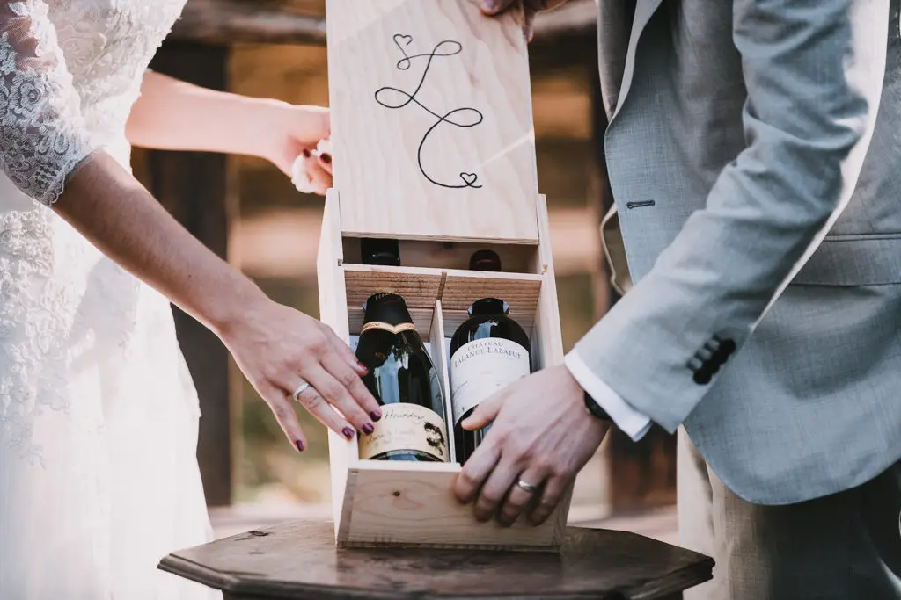
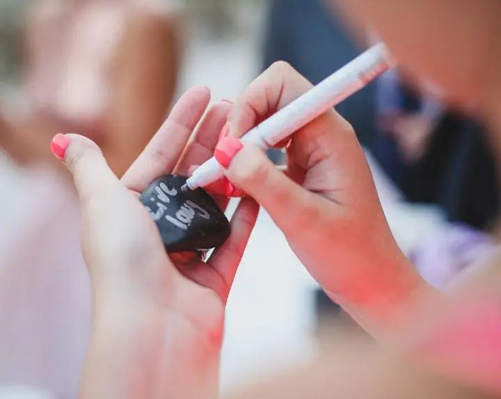
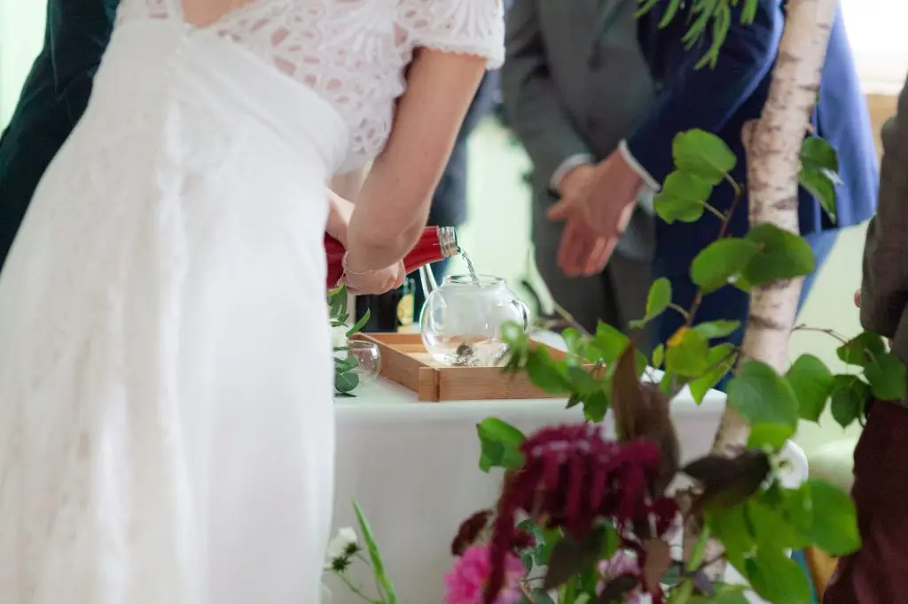
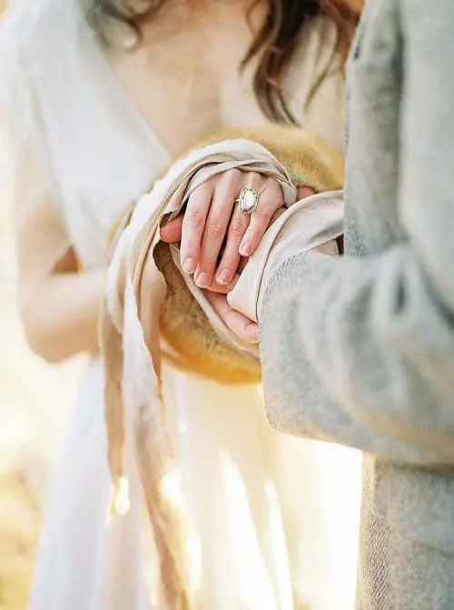
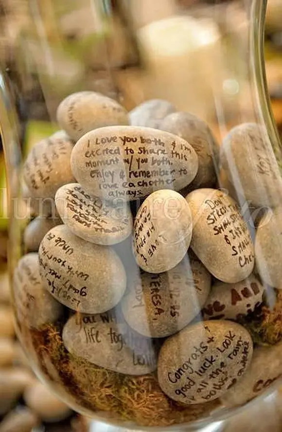
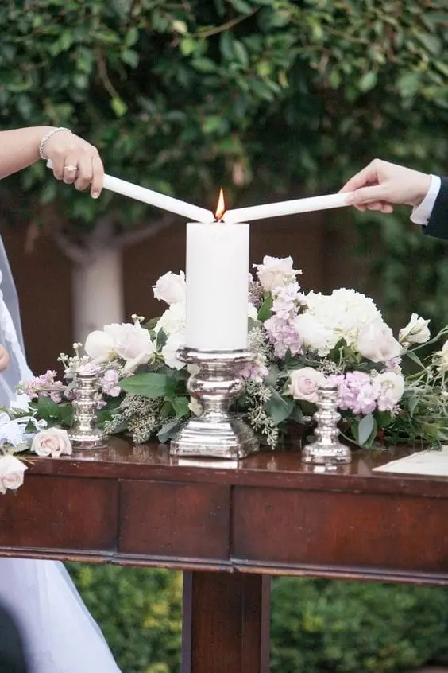
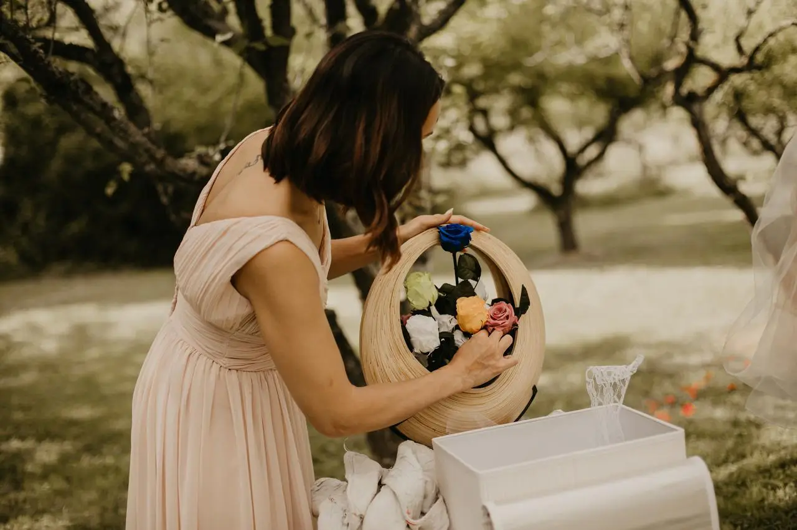
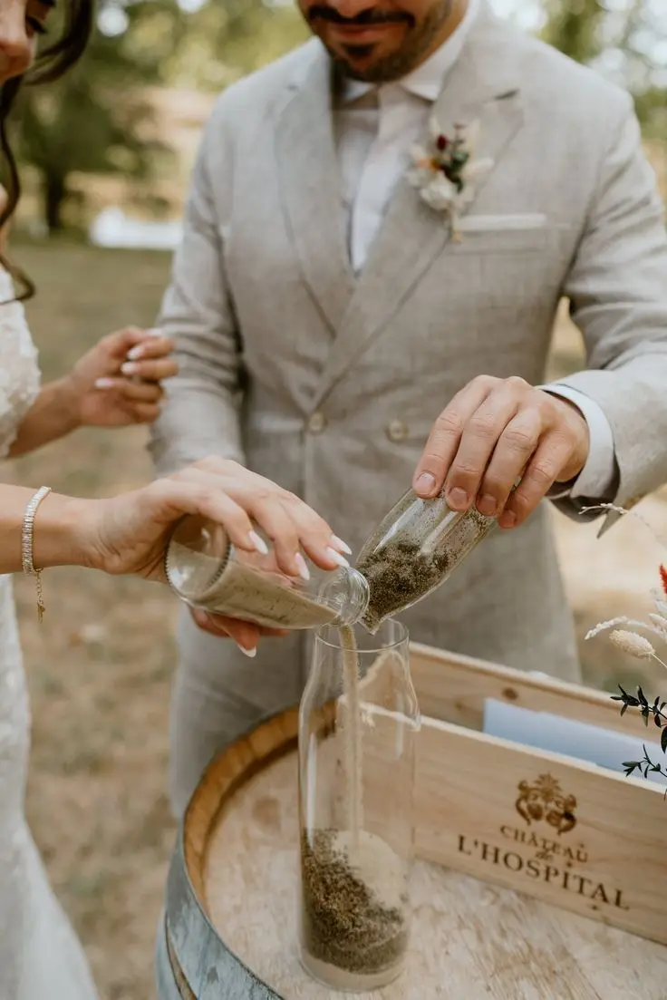
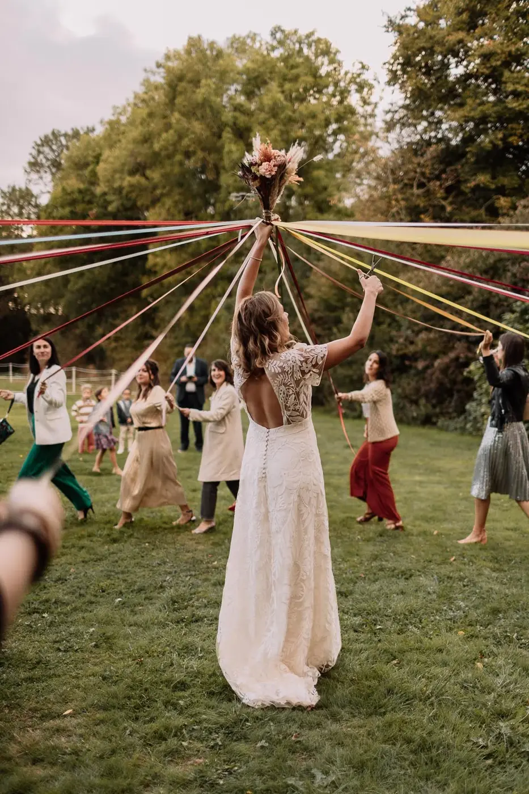

Inspiring (and little-known) traditions for a unique, symbolic and modern ceremony
Dreaming of a wedding ceremony that truly reflects you, with a touch of emotion, meaning… and that little "wow" moment everyone will remember? Whether you are planning an intimate gathering or a large celebration, one thing is certain: it is often the symbolic details that make a ceremony unforgettable.
Good news: all over the world, many rituals have existed for centuries to celebrate the love and commitment of two people. Some are poetic, others more spiritual, but many have one thing in common: they are simple to set up and perfectly adaptable to a modern celebrant-led ceremony.
In Nouvelle-Aquitaine, in the Bordeaux region or around Bordeaux, these rituals fit beautifully into venues such as châteaux, wine estates, gardens or the beaches of the Atlantic coast. They bring a personal, elegant dimension without weighing down the running order.
Whether you are preparing a celebrant-led, religious or symbolic ceremony, these world traditions can become a real highlight of your wedding, for you as much as for your guests.
In this article, I share original (and often little-known) rituals, their meaning and, above all, how to include them easily in your wedding ceremony, in a modern, natural way, without them feeling out of place or too folkloric.
Why include a ritual in a wedding ceremony?
Because a ritual is much more than a simple activity: it is a powerful symbolic moment that lets you express your commitment in a way other than words. It gives real depth to your ceremony and adds an extra emotional dimension, for you as much as for your guests.
Including a ritual makes the ceremony more alive, creates a shared emotion and lets your loved ones take part naturally. It is also a lovely way to tell your story differently, through a gesture, a tradition or a symbol. And very often, these are the moments that become the most memorable… and the most photogenic.
Most importantly, there are no strict rules: you can adapt, modernise and personalise each ritual so that it reflects you perfectly.
The sand ceremony (Hawaii): two lives that become one
Origin and meaning
Very popular in Hawaii and in some spiritual ceremonies, this ritual symbolises the union of two people into a single whole. Each partner pours sand (often in different colours) into the same vessel. Once mixed, the grains can never be separated: a beautiful metaphor for your union and your shared commitment.
How to give it a modern twist
To personalise this ritual, you can choose two colours that represent your personalities or your wedding theme. Ideally, use a beautiful glass vase or a clear container, perhaps engraved with your names and wedding date, so you can keep it as a decorative keepsake. You can also add a third colour to symbolise your future, or your children if you already have them.
An emotional variation
This ritual can become even more moving if your loved ones take part. Parents can pour a little sand to represent your roots, children to symbolise the family you are building, and your witnesses to represent the support and friendship that surround you.
Wedding planner tip: put the sand in small, elegant containers (clear glasses, vials or mini carafes). This makes the gesture smoother, tidier and, above all, far more beautiful during the ceremony.



Handfasting (Celtic tradition): where "tying the knot" comes from
Origin and meaning
Handfasting is a ritual from Celtic traditions, mainly in Ireland and Scotland. It involves binding the couple's hands with a ribbon or cord, symbolising their commitment, their union and the bond that now unites them. This powerful gesture represents the choice to walk together, in the same direction, as a team.
It is from this tradition that the English expression "tying the knot" comes, a direct reference to the bond created during the ceremony.
How to include it in a ceremony today
Handfasting fits very easily into a celebrant-led or symbolic ceremony. To make it match your style, you can choose a ribbon in your colour palette or to go with your decor. You can also have your initials or wedding date embroidered on it to make it a unique keepsake.
To give the ritual even more meaning, you can use a symbolic fabric: family lace, a ribbon from your outfit, or even a piece of fabric linked to an important memory. The ritual usually takes place during the vows, or just before the exchange of rings, which naturally heightens the emotion.
An ultra-modern idea
For a more contemporary, elegant version, you can replace the classic ribbon with a natural linen cord (very chic), a hand-braided rope or a silk ribbon. Some couples also use several ribbons brought by their loved ones, each representing a core value of the couple such as love, respect, trust or joy. This makes the ritual even more personal and deeply symbolic.


The tea ceremony (Chinese tradition): honouring the family
Origin and meaning
In several Asian cultures, notably in China, Vietnam and Taiwan, the tea ceremony is a deeply symbolic ritual. It represents a moment of respect, gratitude and recognition towards parents and elders. The couple serve tea to their family as a sign of honour and thanks, and in return receive a blessing, a piece of advice or sometimes a traditional gift.
It is a very emotional ritual, because it highlights the essential role of family in building a couple. In some traditions, this ceremony takes place before the official wedding, as an important step before the union.
How to adapt it to a Western wedding
Even if your guests are unfamiliar with this tradition, it fits perfectly into a modern wedding, as long as it is explained simply. You can choose to hold a short version during your celebrant-led ceremony, or a more intimate one before the cocktail hour, with only your closest family. This option is ideal if you want a more discreet moment that is just as meaningful.
A modern, chic version
For an elegant adaptation, you can replace the tea with a local infusion or a symbolic drink: homemade tea, a herbal tea from the garden, matcha or a personalised blend. Ideally, use a beautiful vintage tea set, whether a family heirloom or a lovely hire, to reinforce the authenticity of the moment.
To enhance the ritual, you can also create a small, refined setting with a decorated table, a few flowers, candles or elements that match your wedding decor.
Tip: ask your celebrant to introduce this ritual in two simple sentences. Your guests will immediately understand the meaning of the gesture, making the moment even more touching.
The candle ritual (Christian and North American tradition)
Origin and meaning
The candle ritual symbolises two lives becoming one. Each partner lights an individual candle, representing their life and personality, then both flames are used to light a central candle, the symbol of their union and shared commitment. Very popular at symbolic weddings in North America and in some Christian ceremonies, this ritual is timeless and easily adapted to a modern or celebrant-led ceremony.
How to make it feel less "seen before"
To give this ritual an original touch, you can choose a personalised candle engraved with your names and wedding date, or use slim candles in designer holders for an elegant look. You can also involve your parents or loved ones: they light the first candles, symbolising the family's support and love.
A romantic variation
To heighten the emotion, accompany this moment with a text read by two voices or soft background music, which will enhance the symbolism of the union and create an intimate, memorable moment for you and your guests.
The stone ritual (Native American and Nordic inspiration)
Origin and meaning
The stone ritual has its roots in certain Native American and Nordic traditions, where each stone represents an intention or an energy. During the ceremony, each guest takes a stone and places an intention in it, whether love, protection or happiness, before placing it in a vase or basket. This symbolic gesture actively includes your guests and creates a shared moment full of meaning.
How to include it easily
To set up this ritual, you can place stones on the benches or chairs before the ceremony begins. The celebrant can then simply explain: "Hold this stone in your hand and think of a wish for the couple." At the end of the ceremony, guests come and place their stone in a central container, sealing their intentions and good wishes.
A modern, decorative version
For an elegant, lasting result, use a large glass jar that you can then keep at home as a decorative object full of memories. This ritual is not only emotional but also very photogenic, and it works particularly well for outdoor ceremonies, in the sunshine or in a garden.


The sealed wine ritual (American tradition): a time capsule
Origin and meaning
The sealed wine ritual is an American tradition that creates a symbolic time capsule for the couple. The partners place a bottle of wine and a letter written to each other in a box, then seal it to be opened later, often after one, five or ten years. This gesture preserves the memory of the day, recalls why you chose each other, and lets you reconnect with the original emotion of your union.
How to adapt it
To personalise this ritual, choose a wine you truly love, or a vintage champagne to enjoy later. You can add a photo of the two of you, or a small symbolic object such as a cinema ticket or a postcard that recalls an important moment in your story.
A romantic idea
Decide together when you will open the box: it could be on your first wedding anniversary, or later, at a time when you want to remember the strength of your love. This ritual is intimate, romantic and full of precious memories, creating a lasting link between your wedding and your future life.
The wish ribbon ritual (Brazilian inspiration)
Origin and meaning
In some Brazilian traditions, wish ribbons, called fitas, are tied around the wrist or to a particular object. Each knot symbolises a wish or an intention, whether happiness, luck or protection. This ritual is a simple, poetic way to pass on positive messages and create a symbolic bond between participants.
A modern wedding version
To adapt it to a contemporary wedding, you can ask your guests to write a word or a wish on a ribbon or a small strip of fabric. These ribbons can then be tied together on an arch, a tree, a sign or even around a vase, creating a stunning visual installation, colourful and full of emotion.
This ritual is both participatory and decorative, and it gives you a lasting keepsake to take home after the ceremony.
The flower ritual (Indian inspiration)
Origin and meaning
In India, couples traditionally exchange flower garlands, a symbol of respect, acceptance and union. This gesture represents welcoming the other into one's life and family, and celebrates the beauty and lightness of love through flowers.
How to include it without simply copying?
To modernise this ritual and adapt it to your ceremony, you can replace the garland with a single flower, a floral bracelet, or a simple symbolic gesture such as placing a flower on the other's shoulder.
This ritual is gentle, quick and very poetic, perfect for adding a symbolic, elegant moment to your ceremony without overloading it.

How to choose the right ritual for your wedding
For a ritual to have real impact, it must reflect who you are and fit harmoniously into your ceremony. To guide you, ask yourselves three simple questions.
First: does this ritual say something about us? If the answer is yes, that is a good sign: the ritual should reflect your story, your values or your passions.
Second: is it easy for our guests to understand? A ritual that is too long or too complex can break the rhythm of the ceremony and lose your loved ones' attention.
Finally, ask yourselves whether it matches the mood of your wedding. Is your ceremony boho, chic, intimate or rather grand? The chosen ritual should stay consistent with your style and fit naturally with your decor and running order.
By answering these three questions, you can be sure to choose a ritual that is meaningful, accessible and in harmony with your wedding.

Where to place these rituals in your ceremony
The moment you include a ritual in your ceremony matters as much as the ritual itself. For it to be emotional and seamless, choose a moment that fits naturally into the running order.
The best moments are often after the couple's entrance, to set an emotional atmosphere straight away, or after the speeches and readings, to prolong the impact of the words. You can also hold the ritual just before the vows, to strengthen their meaning, or just after the exchange of rings, as a symbolic conclusion to the union.
In terms of length, allow ideally 2 to 5 minutes per ritual. Any longer and you risk breaking the rhythm of the ceremony and losing your guests' attention. Well integrated, a ritual becomes a powerful, memorable and moving moment without weighing down the running order.
My advice for keeping it elegant (and not gimmicky)
For your rituals to be both meaningful and beautiful, a few simple precautions are enough. Start by having the ritual introduced with a simple sentence explaining its origin and meaning. This helps your guests immediately understand the significance of the gesture.
Then prepare all the materials in advance and rehearse the sequence so that everything runs smoothly on the day. It is important not to pile up rituals: a single well-chosen one is enough to create a powerful, memorable moment.
Think about the look too: choose a beautiful container, quality ribbons or elements, and make sure everything is consistent with your decor. Finally, have these moments filmed or photographed, as they often become the most moving and lasting memories of your wedding.
Video: wedding traditions around the world
In short...
Rituals from around the world are an incredible source of inspiration. They add depth, meaning and a real emotional dimension to your ceremony, whether you are in Bordeaux, in Nouvelle-Aquitaine or elsewhere in France. Most importantly, you do not need to belong to a culture to draw inspiration from one of its rituals, as long as you do so with respect, understanding and intention.
Love is universal… so why not draw on all the ways it is celebrated, wherever you are.
Need help creating your personalised ceremony?
At LOVELY DAY EVENT, I help you build a seamless, elegant and moving ceremony, with rituals suited to your story and style, whether at a Bordeaux château, a wine estate in Nouvelle-Aquitaine or an intimate garden.
Get in touch to imagine an unforgettable ceremony together.
Lovely Day Event offers several services
Wedding planning
I will be involved at every stage of your preparations and guide you through your choices. I come up with ideas so that your wedding looks like no one else's.
Wedding styling
Creative and passionate, I am a certified Wedding Designer and I create a scenographic atmosphere that matches your wedding theme.
On-the-day coordination
I will be the conductor, managing your suppliers, the set-up of your decor and the flow of your beautiful day.